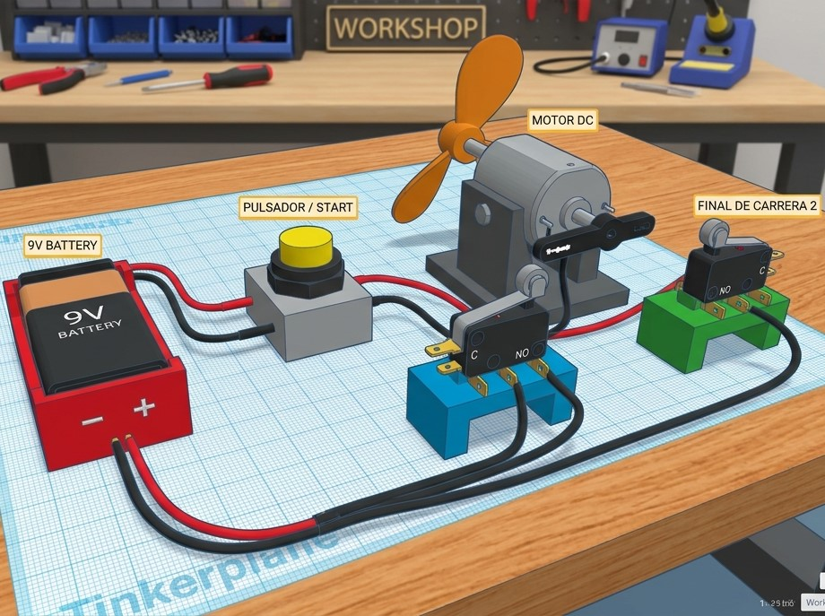
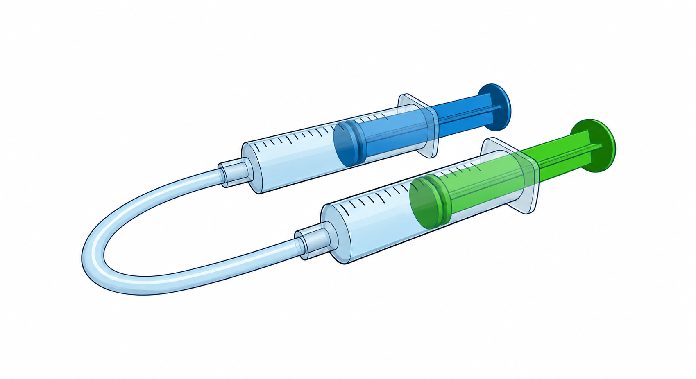
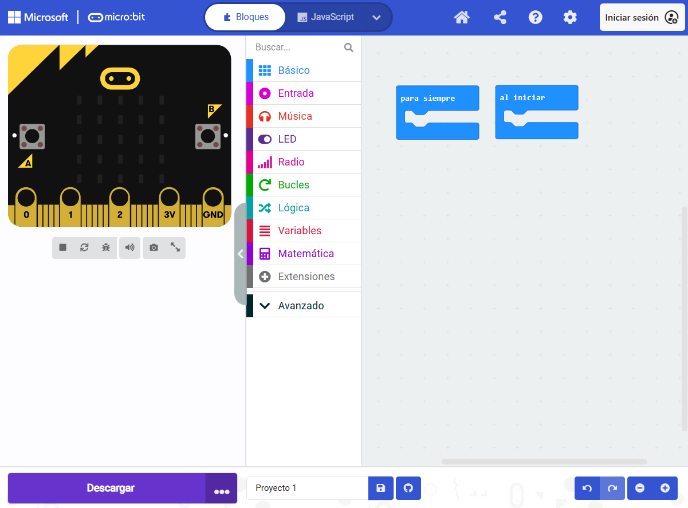

Tu proyecto de un vistazo
Esta línea temporal te ayuda a ver, de un solo golpe de vista, qué vas a hacer, cuándo, con quién y con qué herramientas. Consúltala cada semana para saber en qué punto estás y qué viene después.
La línea temporal
Abrir la línea temporal en una ventana nueva (mejor para verla a pantalla completa)
Las tres fases, una a una
Si prefieres leerlo en texto, o la línea temporal no se ve bien en tu dispositivo, aquí tienes el resumen de cada fase. Pulsa en cada pestaña para verla.
Fase 1: Electricidad
Electricidad y Electrónica
| Sesiones | 11 |
|---|---|
| Trimestre | 2.º |
| Tareas | 1 a 4 |
| Qué harás | Diseñar y simular el circuito, montarlo y comprobar el motor con los finales de carrera. |
| Herramientas | Simulador de circuitos online, material de taller, diario técnico |

Imagen generada con inteligencia artificial (Gemini, de Google) por Manuel Hernández Cledera, 2026. Licencia CC BY-NC-SA 4.0.Fase 2: Neumática
Neumática
| Sesiones | 4 |
|---|---|
| Trimestre | 2.º |
| Tareas | 5 |
| Qué harás | Construir y probar el cilindro neumático con jeringuilla para accionar la compuerta. |
| Herramientas | Material de taller, diario técnico |

Fase 3: micro:bit
Automatización con micro:bit
| Sesiones | 8 |
|---|---|
| Trimestre | 3.er |
| Tareas | 6 a 9 |
| Qué harás | Programar la micro:bit para que la compuerta funcione de forma automática y probarla. |
| Herramientas | MakeCode, micro:bit, diario técnico |

Durante todo el proyecto
Las 23 sesiones, entre el 2.º y el 3.er trimestre, incluyen documentar el proceso en el dosier del equipo (Google Sites) y rellenar el diario técnico después de cada sesión.
Cómo leer la línea temporal
- Sigue el orden: cada fase se apoya en la anterior. No pases a la siguiente sin haber comprobado que lo anterior funciona.
- Fíjate en los agrupamientos: la línea indica cuándo trabajas en equipo y cuándo individualmente.
- Revisa los espacios y recursos: verás dónde se trabaja cada sesión y qué necesitas llevar.
- Si te retrasas: habla con tu docente. Se puede reajustar el ritmo sin perder el hilo del proyecto.